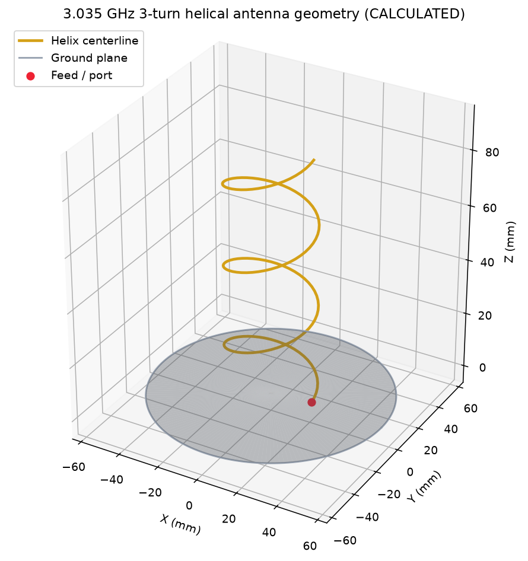
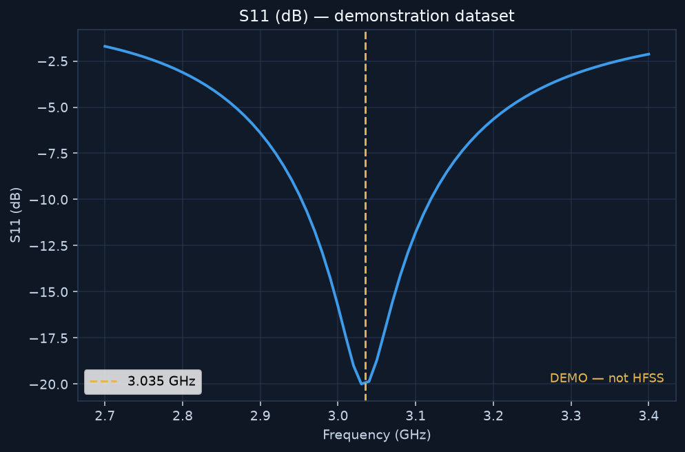
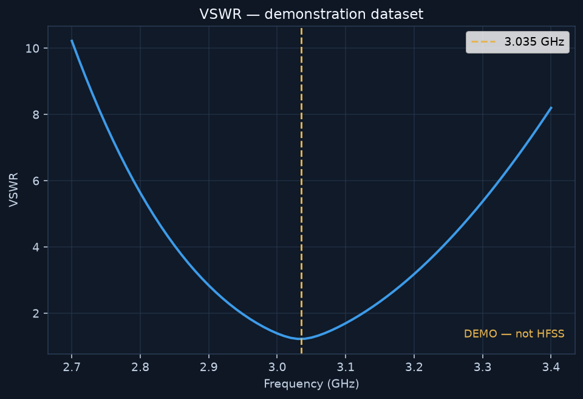
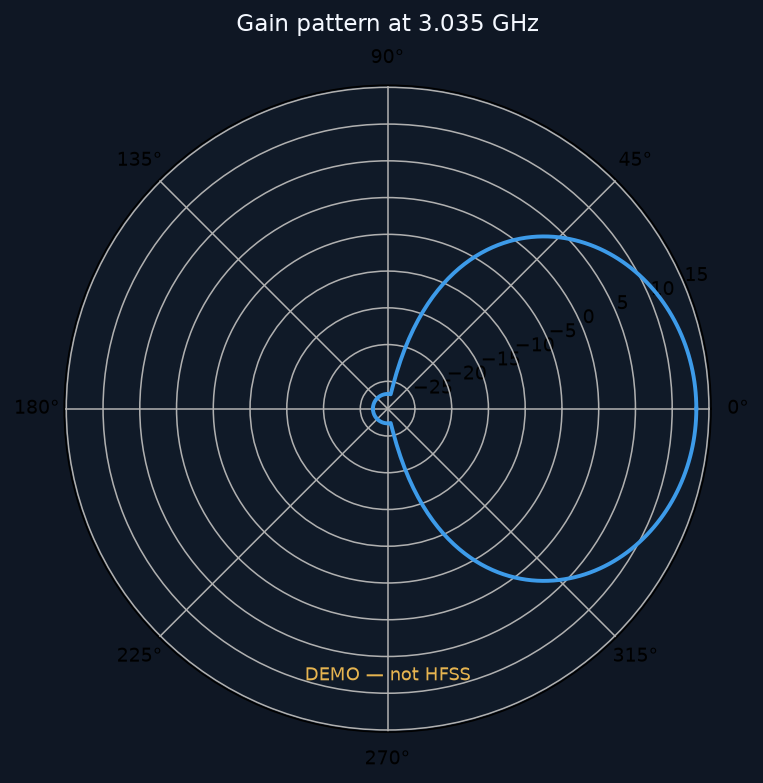
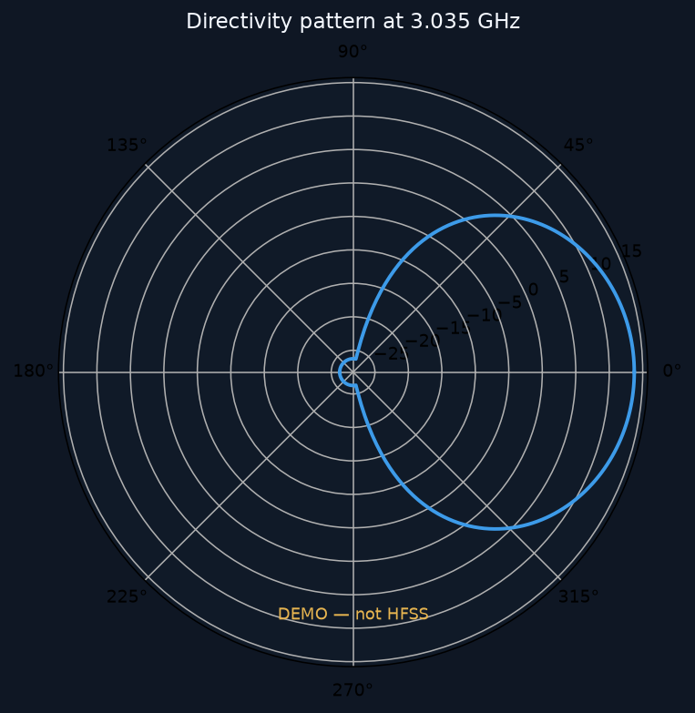
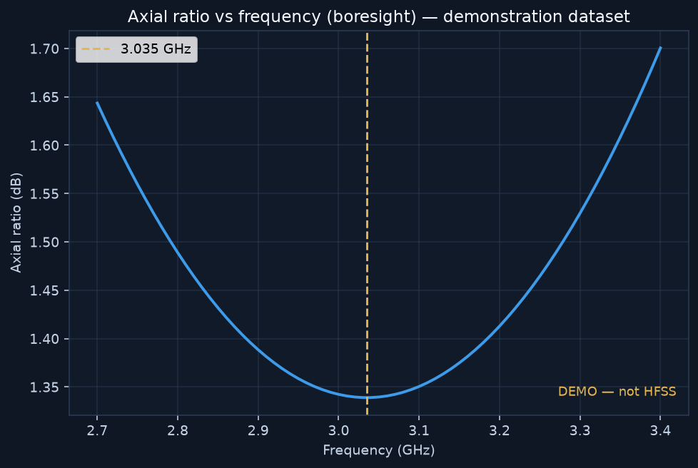
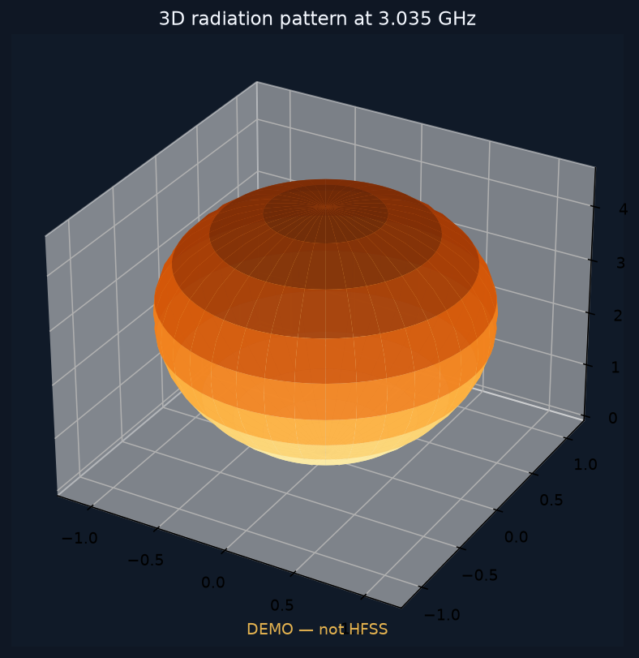

1. Executive Summary
A 3-turn axial-mode helical antenna at 3.035 GHz was modeled from Helical Antenna_Modified_Parameter (1)(1).docx. HFSS numerical results are DEMO. No fabricated S11, VSWR, gain, directivity or axial-ratio numbers are reported.
2. Design Objective
Build a repeatable HFSS workflow for the source helix, with GUI automation, result extraction and acceptance testing.
3. Source Specification
| Frequency | 3.035 GHz |
| Turns | 3.0 |
| Radius | 20.94 mm |
| Pitch | 29.27 mm |
| Wire | 18 AWG, Ø 1.024 mm |
| Ground radius / diameter | 56.29 / 112.59 mm |
| Axial length (source) | 87.82 mm |
4–5. Geometry and Validation
C/turn calculated 131.5699 mm vs source 131.58 mm. Pitch angle 12.5422° vs 12.54°. N·P = 87.8100 mm vs source 87.82 mm (0.01 mm rounding).

6–9. Materials, Feed, Port, Boundaries
Copper helix and ground (assumption). 50 Ω lumped port across a 1.5 mm gap (assumption). Radiation box padding 0.5 λ0 = 49.389 mm (assumption). λ0 = 98.7784 mm (calculated).
10–12. Mesh, Solver, Sweep
Project Helix_3035MHz, design Helix_3035MHz, Setup1 at 3.035 GHz, MaxPasses 15, MaxDeltaS 0.02, interpolating sweep 2.5–4.0 GHz. Mesh convergence is NOT SIMULATED.
13–18. Electromagnetic Results
All plots below are empty/watermarked until HFSS solves.






19–20. Requirement Comparison / PASS-FAIL
| Parameter | Requirement | HFSS Result | Status | Notes |
|---|---|---|---|---|
| Operating frequency | 3.035 GHz (source) | 3.035 GHz (setup) | SOURCE | This is the SOURCE_SPECIFICATION operating point, not an HFSS-extracted resonance. |
| S11 at 3.035 GHz | <= -15.0 dB (preferred -25.0 to -15.0 dB) | -19.92 dB | DEMO PASS | DEMONSTRATION_EXAMPLE (modified-parameter ready-made set) |
| VSWR at 3.035 GHz | 1.1:1 to 1.4:1 | 1.224:1 | DEMO PASS | DEMONSTRATION_EXAMPLE (modified-parameter ready-made set). Target is a band, not a single number. |
| Directivity | 10.0 to 14.5 dBi | 13.74 dBi | DEMO PASS | DEMONSTRATION_EXAMPLE (modified-parameter ready-made set). Compare main-beam directivity, not an arbitrary cut. |
| Gain | 9.5 to 14.0 dB | 13.28 dB | DEMO PASS | DEMONSTRATION_EXAMPLE (modified-parameter ready-made set) |
| Axial ratio (main beam) | < 1.5 dB | 1.339 dB | DEMO PASS | DEMONSTRATION_EXAMPLE (modified-parameter ready-made set). Main-beam direction (θ=0°, φ=0°). |
Overall: DEMO
21. Engineering Assumptions
See ENGINEERING_ASSUMPTIONS.md. Feed, materials, air box and solver controls are not source requirements.
22. Limitations
- No physical coax/connector in the first-pass model.
- Copper conductivity and ground thickness assumed.
- Radiation boundary (not PML) as first pass.
- Without a solved HFSS project, RF metrics cannot be accepted.
23. Recommended Next Steps
- Install/license Ansys Electronics Desktop.
- Press RUN in the GUI (or Tools > Run Script on hfss/project/build_helix_hfss.py).
- Inspect geometry, materials, port and radiation box.
- Analyze Setup1 and export results.
- Re-run extraction so this report fills with HFSS_SIMULATED values.
- If S11 is poor, replace the lumped gap with the real coax feed rather than changing source helix dimensions.